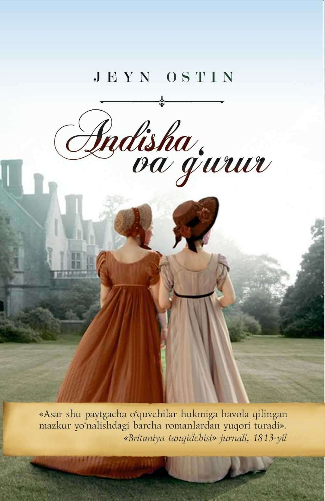

Jeyn Ostin 1775-yil 16-dekabrda Angliyaning Xempshir grafligidagi Stiventon shaharchasida tug'ilgan. Yozuvchi o'zining "His va hissiyotga berilish", "Andisha va g'urur", "Mensfildpark", "Emma" va "Idrok asoslari" asarlari bilan tanilgan.
Ushbu asarda mister Darsi va miss Elizabetlarning o'rtasidagi sarguzashtlar hikoya qilinadi. Asar 1813-yil nashr qilinadi va adabiyot dunyosida katta shov-shuvlarga sabab bo'ladi. O'sha paytdagi "Britaniya tanqidchisi" jurnalida shunday yozilgan: "Asar shu paytgacha o'quvchilar hukmiga havola qilingan mazkur yo'nalishdagi barcha romanlardan yuqori turadi"
